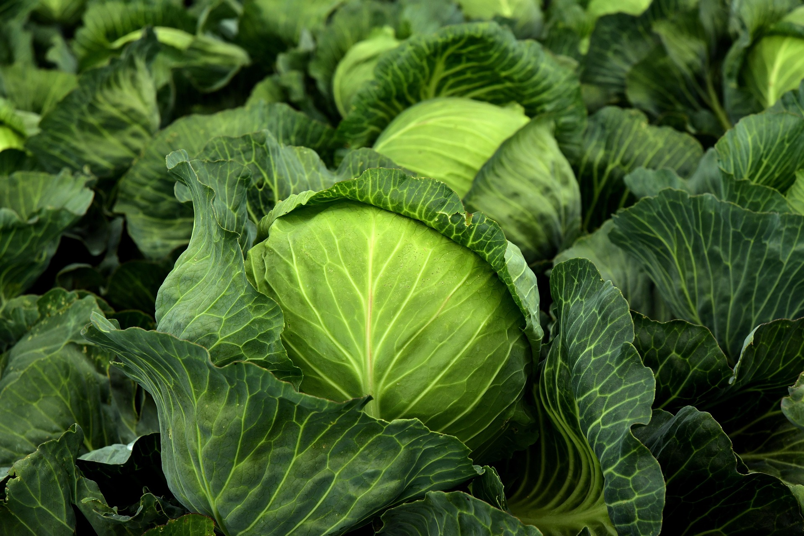
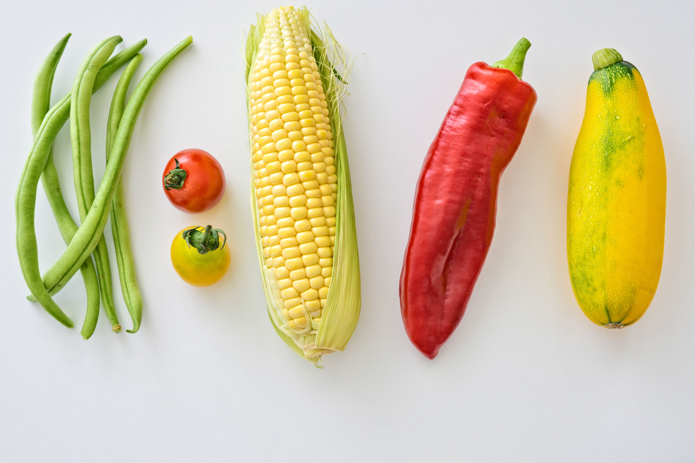

A vegetable is any edible part of a plant used for food, such as the roots, stems, leaves, or flowers.Vegetables can be eaten either raw or cooked and play an important role in human nutrition, being mostly low in fat and carbohydrates, but high in vitamins, minerals and dietary fiber.

